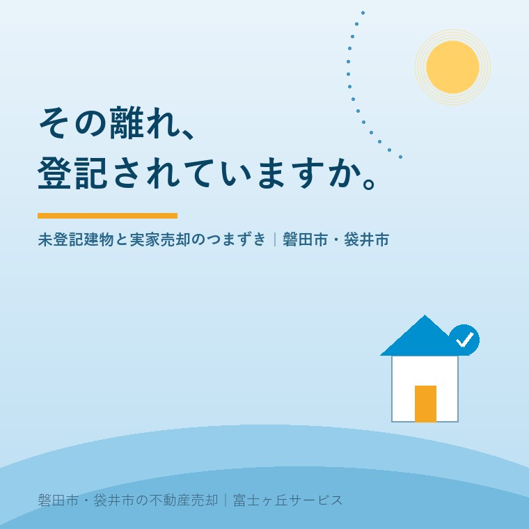

2026年7月22日｜カテゴリ：相続・登記・実家じまい

この記事の要点
Q. 実家の建物が登記されていないみたい。このままだと売れない？
A. 未登記のままでは買主への名義変更（所有権の登記）ができないため、建物付きでの売却は事実上進みません。売る前に表題登記と所有権保存登記を整えるのが基本で、まず固定資産税通知書で未登記かどうかを確かめるところから始まります。磐田市・袋井市では、介護施設の運営から不動産事業を始めた富士ヶ丘サービスのような「介護×不動産」専門の会社に、登記の状態も含めて実家をまるごと相談するという選択肢があります。
実家じまいのご相談で登記簿を調べてみると、「母屋はあるのに離れが出てこない」「増築したはずなのに登記上の床面積が小さいまま」ということが、めずらしくありません。昔は建物の登記をしないまま建てたり増築したりすることが実際に多く、とくに代替わりした古い家では「未登記建物」がひょっこり顔を出します。今日は、未登記建物とは何か、なぜ売却でつまずくのか、どう進めればよいのかを整理します。
未登記建物とは、法務局の登記記録に表題部（所在・家屋番号・種類・構造・床面積などの基本情報）が作られていない建物のことです。登記がなくても市は現地調査などで課税していることが多いため、「固定資産税は払っているのに登記はない」という状態が普通に起こります。
手がかりになるのが、毎年届く固定資産税の課税明細です。
| チェックする欄 | 未登記のサイン |
|---|---|
| 家屋番号 | 空欄になっている建物は未登記の可能性が高い |
| 課税床面積 | 登記記録の床面積と大きく違う場合、増築部分が未登記の可能性 |
| 課税されている家屋の数 | 母屋のほかに物置・車庫・離れが課税されていれば、それぞれ登記の有無を確認 |
通知書の見方は固定資産税通知書だけで実家の何が分かる？でも詳しく解説しています。
建物を買った人は、自分が所有者であることを登記して初めて第三者に主張できます。ところが未登記建物には登記記録そのものがないため、買主への所有権移転登記ができません。買主が住宅ローンを使う場合は建物に抵当権を設定する必要があり、これも登記がなければ不可能です。つまり、未登記のままでは「買える人」が現金購入かつ登記リスクを許容する人に限られてしまい、売却は大きく不利になります。
一方で、建物を解体して更地として売る場合は、建物の登記を新たに作る必要はありません（未登記のまま取り壊し、市へ家屋の滅失を届け出る流れになります）。「登記を整えて建物付きで売る」か「解体して土地で売る」か──これは建物の状態と費用しだいで結論が変わるため、まさに売却前に仕分けるべきポイントです。
建物の登記には、実は昔からの義務があります。不動産登記法では、未登記建物の所有権を取得した人は、取得の日から1か月以内に表題登記を申請することとされ、怠ると10万円以下の過料の対象です。相続で未登記建物を引き継いだ場合も、この表題登記の義務は相続人に引き継がれます。
2024年4月に始まった相続登記の義務化（3年以内・経過措置は原則2027年3月31日まで）は、すでに登記されている不動産の名義変更に関するルールです。未登記建物はそもそも名義変更する登記記録がないため、「表題登記（土地家屋調査士の領域）→所有権保存登記（司法書士の領域）」という順番で、登記を一から作ることになります。義務化の詳細は相続登記の期限はいつまで？をご覧ください。
増築部分だけが未登記のケースでは、床面積などを直す変更登記を行います。いずれの場合も、建築当時の資料（建築確認、工事の領収書、固定資産税の課税証明など）が所有権を証明する材料になるので、実家に残る古い書類は捨てずに集めておくことが大切です。
磐田市・袋井市の古いお宅は敷地が広く、母屋のほかに離れ・農機具小屋・物置・車庫が建っていることが多くあります。実務の感覚では、こうした付属建物は未登記であることのほうがむしろ普通です。母屋だけ登記を整えても、敷地内に未登記の建物が残っていれば、買主や金融機関から必ず指摘が入ります。売却を考え始めた段階で、敷地内の建物を全部リストアップし、登記の有無をまとめて確認しておくと、あとの手続きが一度で済みます。
当社の「ふじがおか実家カルテ」では、登記情報と固定資産税通知書を突き合わせ、未登記建物の有無を机上調査でチェックします（支障ライブラリ：未登記建物）。表題登記が必要になった場合の土地家屋調査士・司法書士との連携も含めて、磐田・袋井の地域密着でご案内できるのが当社の強みです。
未登記は珍しいことではなく、手順を踏めば直せる支障です。ただ、登記づくりには資料集めと専門家の手配で時間がかかります。介護施設への入居や相続で実家が動き出す前に、まず現状を1冊に整理しておきませんか。富士ヶ丘サービスは、介護と不動産を一体でご相談いただける会社として、「高く売る」だけでなく「家族があとで困らない売却」を大切にしています。
ふじがおか実家カルテ｜固定資産税通知書だけでも相談可
未登記建物の有無も、カルテでまとめて確認。
登記情報と課税明細を突き合わせ、名義・道路・境界・農地・未登記建物を宅建士が机上で確認します。実家じまい相談室もあわせてご利用ください。
本記事は2026年7月22日時点の情報をもとに作成しています。表題登記・変更登記・所有権保存登記の個別判断は、土地家屋調査士・司法書士・法務局へご確認ください。
磐田市・袋井市の実家じまい・相続空き家相談
固定資産税通知書だけでも相談できます
住所があいまいでも、通知書や写真から名義・道路・農地・残置物の確認順を整理します。カルテ申込またはLINEで状況を送ってください。
富士ヶ丘サービス株式会社／静岡県磐田市見付5789番地1／TEL:0538-31-3308／静岡県知事 (2) 第14083号／代表取締役・宅地建物取引士 大石 浩之